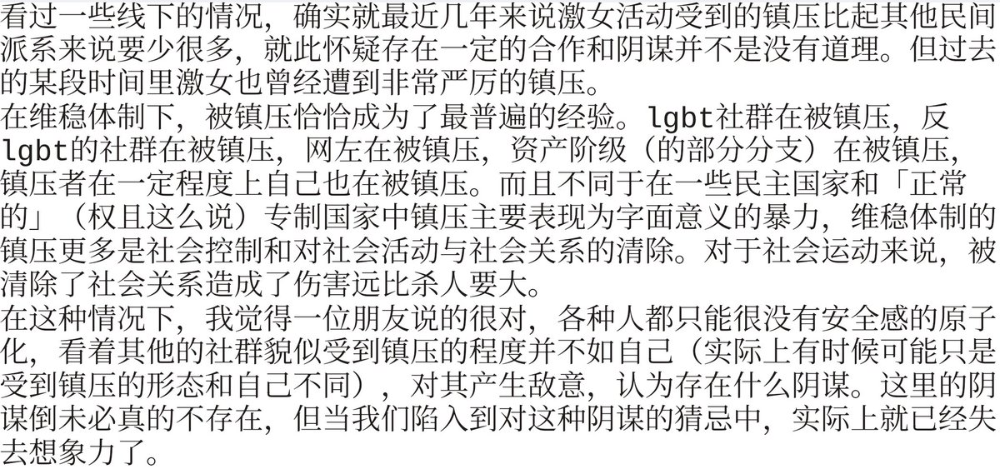

amber
@amber_medusozoa
或者说，激女那种情绪宣泄式的话语在传播上本身就依赖于线下行动的紧缩和原子化（比如婚驴这种辱骂但凡有任何一点家暴干预经验的人都说不出来），激女本身也喜欢强调线下行动的无意义，乃至将女权运动直接等同于话语提纯，这种对线下行动的拒绝又反而使得她们在国家机器的视野里显得更为安全了

🌈 Cic17
@CicadaSeventeen
https://t.co/15YLUB3qmF https://t.co/RUBWerSV0e